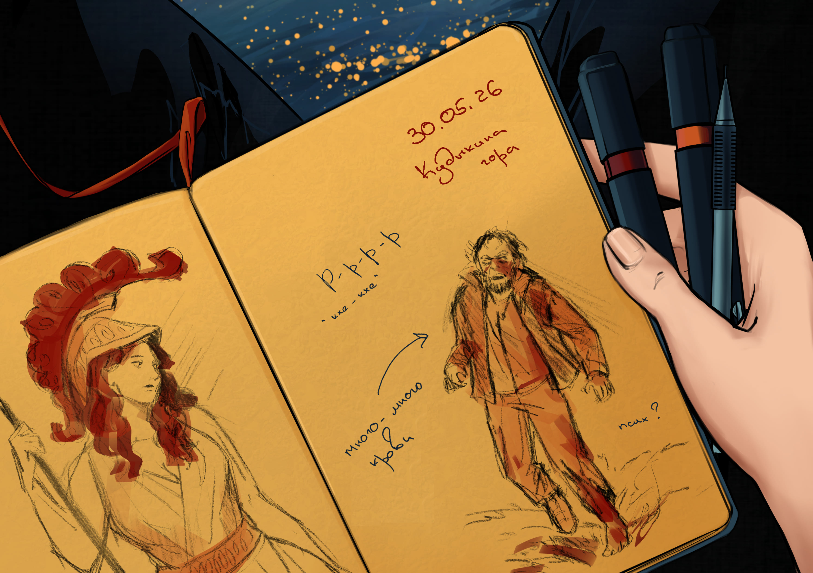

Холодный разум, говорят, — залог идеальной памяти. Я бы поспорила. Мой разум — это кладбище, где похоронены все детали. Но мой блокнот хранит в себе все. Именно он и поможет мне вспомнить, как жаркий май 2026 навсегда изменил наши жизни.
30.05.2026
Я тут подумала: а почему бы нам, девицами, не рвануть куда-нибудь? Ну да, мы никогда раньше не ездили вместе. Но ведь воспоминания нужно создавать самим, а не ждать, когда они появятся случайно. Так что я решила: едем на Кудыкину гору — всегда хотела там побывать, все быстро оплатила, чтобы у девиц не было возможности соскочить.
Кудыкина гора. Звучит почти мистически, но на деле это всего лишь парк под Липецком, где по расписанию рычит Горыныч. Красота природы здесь кажется почти издевательством на фоне навязчивых развлечений. И люди. Их так много, что если бы апокалипсис наступил, его бы не сразу и заметили. Вечная давка, крики детей, пронзающие воздух — чем не предвестник конца, замаскированный под воскресный досуг?

